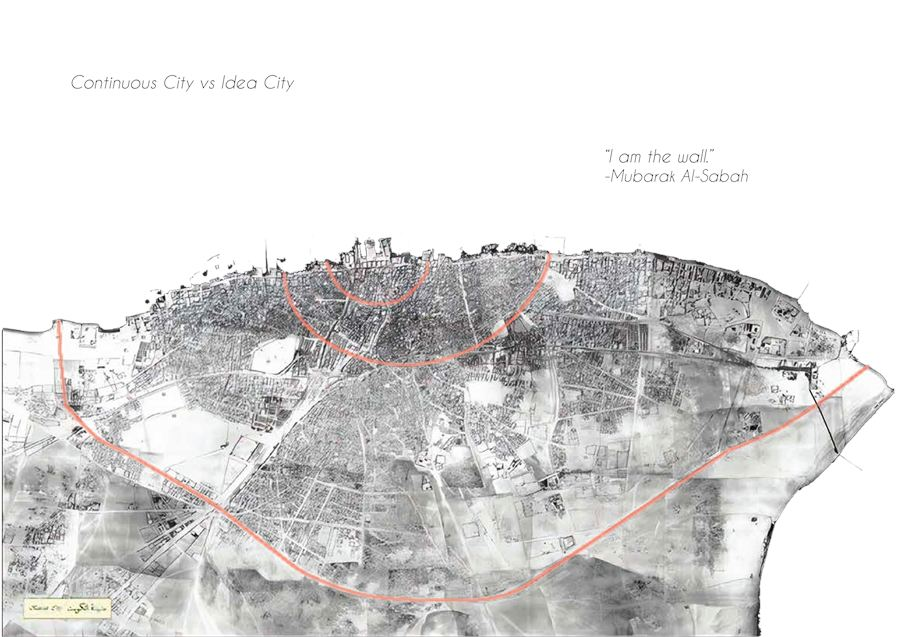
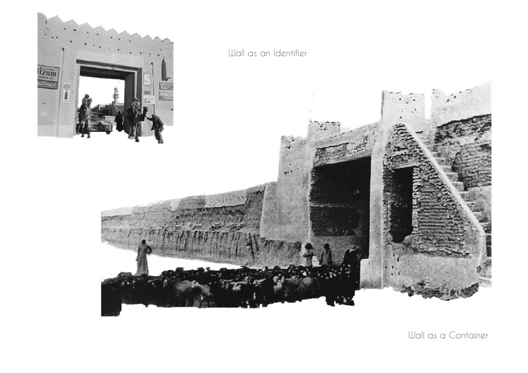
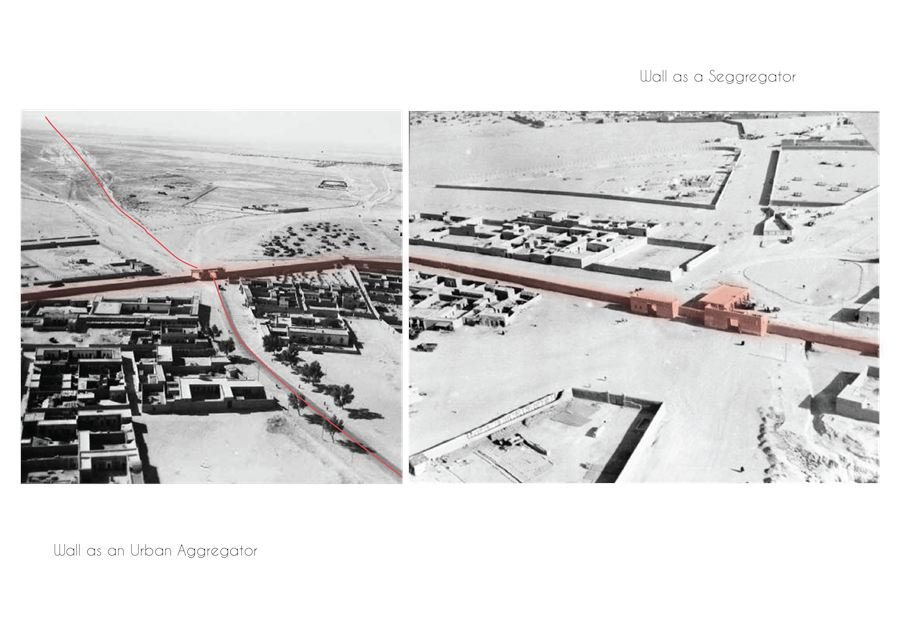
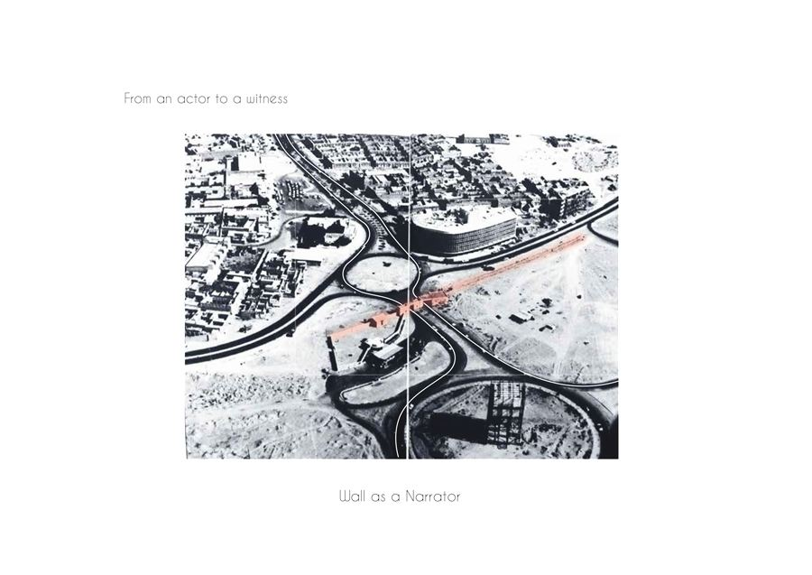
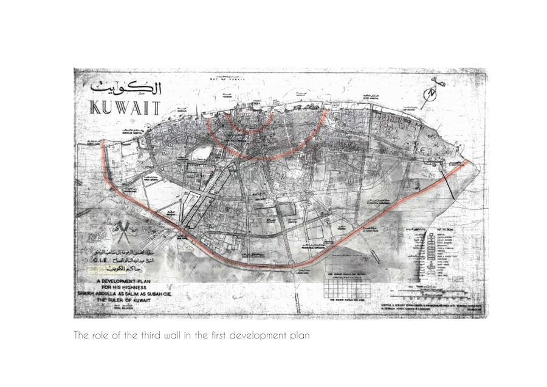
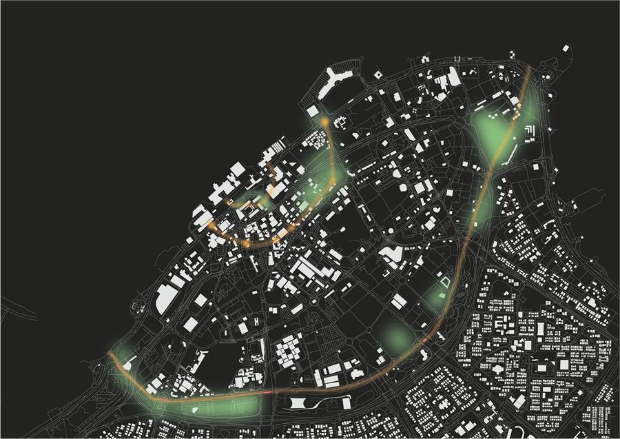
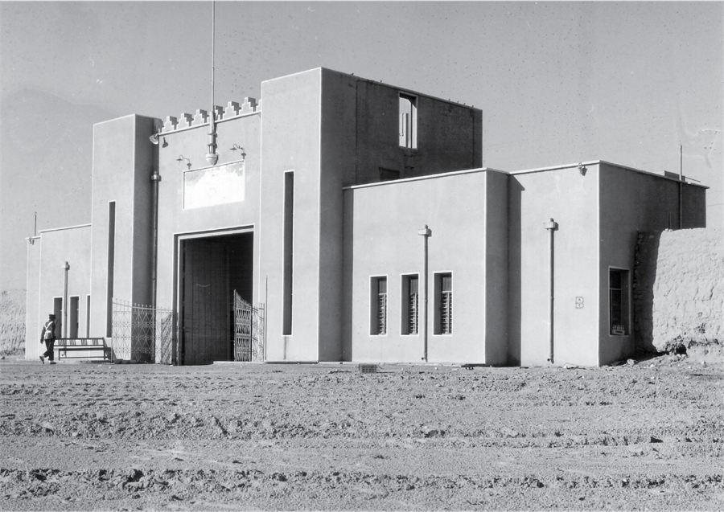
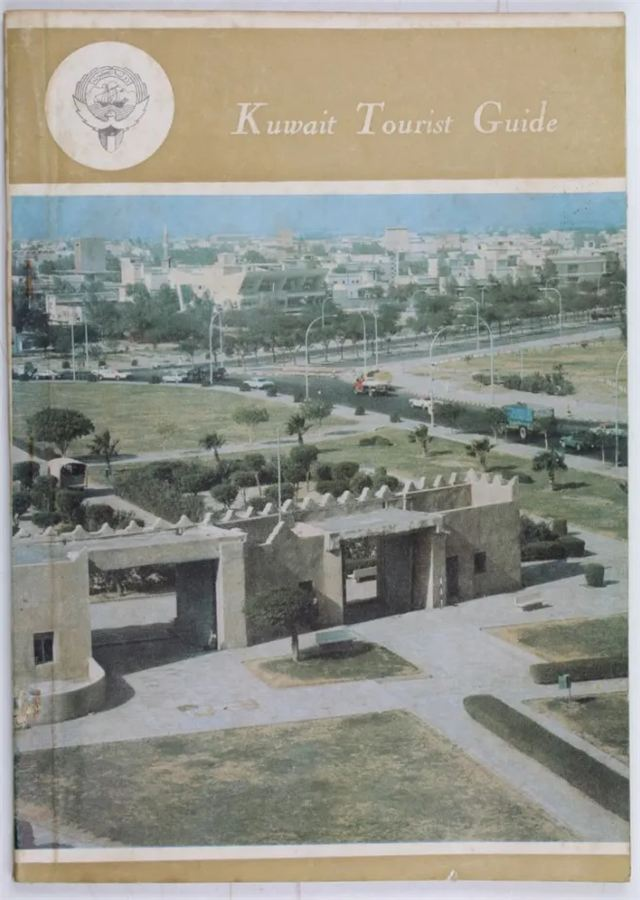

Overview
The proposal explores the intrinsic qualities of city walls not merely as protective edification but as active urban actors and catalysts for urban regeneration. By investigating the potential of re-indexing the lost narrative of Kuwait's city walls in a context that is off-scaled out of human proportion and a landscape hostile to human interaction. How can this lost element of Kuwait's urban identity be reinjected and contextualized as a narrator that drives inclusive spatial regeneration.
Since the first master plan, the wall has morphed from a physical vertical edge into a series of exclusionary thresholds “The Green Belt” tracing the wall's trajectory and embodying similar segregative and defensive roles. However, the role that walling plays in a city-scape evolved away from a container into an incubator and a spatial driver. Therefore, the project focuses on revisiting the green belt vision as an incubator of the missing wall leveraging the existing gates that witnessed the erasure of the wall, as a point of departure.
The aim is to set a framework that establishes the field conditions for future urban generation processes, foregrounding back the lost city wall and its gates as living urban nodes. The site imagines the green belt next phase, specifically, the connection between two remnants of the third wall, from Al-Jahra Gate to Al-Shamiya Gate. The wall and its watchtowers are reintroduced as a penetrative, experiential urban intervention. The field guides experience parallel to the wall throughout the site until a main perpendicular access, which is the gate, emphasizing back the role of the city gates as an ingress and a diffuser. Moreover, contextual ideas from Shaheed Park Phase 1, such as building by subtraction, continuity, and propagating the surviving gate are re-implemented.


On governance and welfare — the wall as a physical agent of governance
Another shift in the governance architecture happened through the first master plan, with the demolition of the wall surrounding the city. Walls have long been essential architectural components in constructing shelters, providing physical protection, comfort, and privacy and embodying symbolic meanings. They define boundaries, assert ownership, and signify security. On a broader level, they represent intentions of territorial expansion, expressions of identity, and defense strategies, encapsulating the aspirations of individuals and societies alike.
Historically, city walls offered more than mere protection; they forged unity, fostered collective pride, and delineated the limits of urban life. These structures became territorial markers, distinguishing those within from outside and showcasing their communities' technical ingenuity and resources. They narrated development, resilience, and expansion stories while witnessing social upheaval, conquest, and resistance periods. Across the world, from East to West, city walls have chronicled urban evolution and the complex relationships between protection, identity, and control.
However, the case of Kuwait presents a different trajectory. On February 4, 1957, the decision was made to dismantle Kuwait's third wall constructed circa 1920, a move justified by the need to “liberate” the city for modernization and accommodate the growing presence of automobiles. This action aligned with the broader push for modernization in post-war urban planning, but it came at the cost of erasing a crucial element of the city's spatial and cultural narrative. Questions about its origins—When was it built? Who constructed it? How was it designed, and how did it serve its defensive function?—Were left unanswered, slipping out of the collective memory of society. The spatial and verbal narrative of Kuwait's city wall, which had once encapsulated stories of solidarity, defense, and identity, was wiped away, leaving a gap in the city's historical consciousness.
Ultimately, the status quo in Kuwait City raises a pressing question: What can be done with a city's vanishing architectural and cultural heritage? How can a city revive the memory of its lost narratives, and what steps can be taken to reestablish a connection to the vanished structures that once played such a pivotal role in its history?


Theoretical framework
The argument about the idea of walling and the general qualitative role that a wall plays in the narration of the city was a center of discussion for academics in the fields of space-making, which blends sociology, geography, urban studies, and cultural theory. Andrea Mubi Brighenti, a Professor of Social Theory at the University of Trento in Italy, and Mattias Kärrholm, a Professor of Architectural Theory at Lund University in Sweden, illustrate in their book “Urban Walls: Political and Cultural Meanings of Vertical Structures and Surfaces” the multifaceted characteristic of an urban wall and the socio-political reasons of its existence or its demise.
According to Brighenti, walls are territorializing devices that parametrize the rhythm of interaction between its inhibitors, thereby structuring interactions and flows while enabling and constraining movement. They utilized the term teichopolitics (from the Greek word teichos, meaning wall), reflecting the socio-political role of walls in managing visibility, access, and interaction across urban spaces.24
Moreover, they portray walls as instruments or definers of physical and metaphorical visibility, as well as social mediators, narrators, and a great tool of surveillance, inspired by the following writings of Michel Foucault and Philippopoulos Mihalopoulous:
“The city exists as much in a network of defensive and protective laws and policies as it does in the fixedness of its material architecture. What Philippopoulos-Mihalopoulous has called the ‘lawscape’ (2013, 2015) and I have called the ‘legislated city’ (Young 2014) is a place in which a particular kind of experience is encapsulated and produced through the regulation of space, temporality and behaviour.”25
From a phenomenological perspective, Gordana Fontana-Giusti, a professor at the School of Architecture at the University of Kent, critically examines walls as socio-political, cultural, and historical constructs, with references to key thinkers such as Michel Foucault, Lewis Mumford, and Henri Lefebvre in her article “Walling in the city.” Giusti lays down the timeframe for the modern de-walling movement. She argues that by the 18th and 19th centuries, the role of walls had evolved as cities expanded beyond their historical cores, highlighting examples such as Vienna's Ringstrasse project, where city walls were replaced with monumental public buildings and parks, symbolizing a shift from defense to urban beautification and social progress.26
Consequently, she draws from the works of Lewis Mumford, a renowned American historian, sociologist, philosopher, and urban theorist (1895–1990), on the original essence of the existence of these walls and the essence of their perseverance today. Mumford demonstrates that the construction of walls signified a critical shift in human life from direct interaction with nature to an enclosed, urbanized existence. This transition led to a growing detachment from the natural world, making urban populations more vulnerable and psychologically fragile. He noted that the dense clustering of people within city walls heightened anxieties and fears, exacerbated by the anticipation of external threats, what he called the “Paranoid City.”27
According to Mumford, the physical boundary of the wall mirrored the consolidation of political control within the city. The wall became a symbol of the ruler's dominion, where the king's word became law, enforced through militarized defenses, which might lead to its prioritization over communal life.28
Furthermore, apart from Mumford, Giusti aligns her argument with other thinkers like Manuel De Landa, Aldo Rossi, and Félix Guattari on the significance of the narrative of walls as a link and a bridge point from the traditional to the contemporary. Describing the works of Briganti, Kärrholm, Guisti, and Mumford lays the framework behind the qualitative features of fortifications today and the excuse behind their existence.29 But what about their future? Where would they lay in the future scenarios of fast-growing and evolving cityscapes? Lastly, how can they be leveraged to shape urban identity?

The phenomenology of old Kuwait City walls
In the mid-20th century, Kuwait underwent a significant transformation when the city's wall was dismantled on February 4, 1957. This change was emblematic of the modernist trends of the time, which prioritized vehicular circulation over the preservation of heritage. However, this shift also fragmented the city's historical identity, disconnecting contemporary urban narratives and their heritage anchors. A closer examination of various thinkers on the roles of city or urban walls reveals that the narrative surrounding the fortifications in old Kuwait City has evolved considerably over time. It is important to categorize and summarize these roles to understand their impact on urban life.
Historically, city walls have served as identifiers, acting as division markers that delineate insiders from outsiders. As Fontana-Giusti points out, walls embody the “us versus them” dynamic, which shapes identities and fosters social hierarchies. Mumford elaborates on how these boundaries can lead to insular populations, often influenced by density and constant fortification. In the context of Kuwait City, the wall not only functioned as a protective barrier but also established a threshold between the settled people of the city “Hadar” (حضـر) and the nomadic Bedouin tribes. This division created physical and psychological boundaries, further emphasized by the contrasting construction materials and economic activities on either side. Consequently, the walls became political and administrative authority markers, reinforcing centralized power within the city's core.
Beyond boundaries, walls also act as containers that densify urban life, fostering clustered settlements within their embrace. This idea can be reflected in the metaphor of the city as an egg, where the walls provide a protective, concave space that shelters inhabitants from the exposed convex world beyond. Thus, the walls defined the city's physical space and contributed to its social dynamics, making it a vibrant urban environment.
Additionally, walls narrate the city's evolution, documenting its growth, unification, and transformation. The walls of Kuwait City bear witness to the collective labor and community spirit that have shaped its history. Their eventual demolition serves as a poignant reminder of changing priorities within the city and the ongoing tension between modernity and heritage. This narrative aspect underscores the significance of the walls in understanding Kuwait's cultural and historical landscape.
Moreover, walls act as urban actors, actively shaping the city's layout, influencing the flow of people and goods, and delineating public and private spaces. Streets often align with former gates, seamlessly integrating the wall's legacy into the urban fabric. The old walls of Kuwait have played a critical role in not only the morphology of pre-oil settlements but also influenced the first master plan of the 1950s, as the wall was reinterpreted into new forms such as highways and green belts, all while maintaining its segregative characteristics.
As the roles of walls evolve, they gradually transition from their defensive functions to become monuments embodying pride and heritage. Cities like Vienna and Rome have reimagined their ancient walls as cultural symbols, and this recontextualization highlights the inherent tensions between modernity and heritage. In Kuwait, the remaining monuments serve as silent witnesses to a past that often conflicts with future developments, as reminders of what has been lost and what may come.
Lastly, it is crucial to recognize that cities are constantly in a state of progress. The fragmented and off-scaled landscape of Kuwait's Central Business District (CBD) suggests limitless possibilities for revitalization. By revisiting Miano's concepts, we can create “places of relation” that bridge divisions between those included and those excluded. Reintroducing an urban edge that interweaves and connects these segregated spaces could pave the way for inclusive interventions, ultimately enriching the urban experience for all inhabitants.



Footnote numbering follows the published chapter in Kaynuna, pp. 102–110.